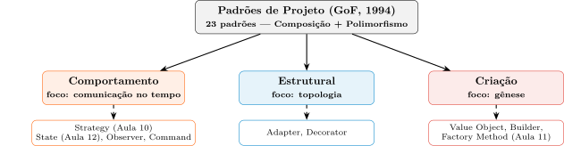
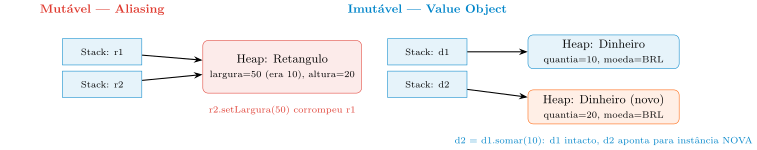
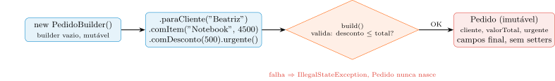

Padrões de Projeto: Vocabulário, Imutabilidade e a Gênese Segura do Objeto
Aula 11 — Programação Orientada a Objetos
1 Proposta da Aula
Na Aula 10, a Composição nos deu uma saída estrutural para o colapso da Herança: em vez de um objeto forçado a ser várias coisas ortogonais ao mesmo tempo, ele passou a usar especialistas intercambiáveis. Batizamos essa solução — interface, injeção de dependência, delegação — de padrão Strategy. Mas o Strategy não caiu do céu: ele é um representante de uma família de 23 soluções catalogadas, cada uma nomeada, documentada e testada por décadas de prática. Antes de continuar empilhando padrões novos, vale dar um passo atrás e entender o mapa completo — de onde vem esse vocabulário, o que ele explicitamente não é, e como os 23 padrões se organizam em famílias.
Com o mapa em mãos, esta aula ataca um problema que o Strategy não resolveu: mesmo com o comportamento de pagamento desacoplado, o Pedido ainda pode nascer incompleto, com um total inconsistente, ou carregando um valor monetário que qualquer parte do sistema pode corromper “pelas costas”. Se a Aula 10 resolveu como o objeto se comporta, esta aula resolve como o dado é protegido e como o objeto nasce em segurança.
O roteiro, em quatro perguntas:
- De onde vêm os Padrões de Projeto, e por que o vocabulário sozinho já vale a pena aprender, antes mesmo de dominar cada padrão em profundidade?
- Por que compartilhar uma referência para um objeto mutável é uma bomba-relógio silenciosa na Heap — e o que muda se esse objeto simplesmente não puder mudar?
- Quando a lista de parâmetros de um construtor vira um labirinto de posições, quem deveria assumir a responsabilidade de montar o objeto corretamente?
- Se o operador
newé “a cola mais forte do código”, como um sistema decide qual classe concreta instanciar sem que o código cliente precise saber?
Considere o Pedido do nosso e-commerce, já purificado pelo Strategy na Aula 10. Ele ainda tem um valorTotal guardado como double mutável, um construtor que aceita cliente, itens, desconto e uma flag de urgência em qualquer ordem, e uma lógica de notificação de status espalhada por vários pontos do sistema. É esse Pedido, quase pronto mas ainda frágil em três pontos precisos, que os próximos blocos blindam.
2 O Vocabulário dos Padrões de Projeto
A origem: da construção civil ao software. Nos anos 1970, o arquiteto civil Christopher Alexander publicou A Pattern Language, catalogando topologias recorrentes em construções urbanas bem-sucedidas — como iluminar cômodos, como estruturar praças. Alexander notou que construções bem-sucedidas seguiam topologias de design recorrentes; a comunidade de software percebeu, décadas depois, que sistemas resilientes compartilhavam o mesmo fenômeno. Assim como a engenharia civil não reinventa o formato de uma porta a cada casa nova, a engenharia de software não deveria reinventar a forma de orquestrar objetos dependentes a cada sistema novo.
O marco zero dessa disciplina na computação ocorreu em 1994, com a publicação de Design Patterns: Elements of Reusable Object-Oriented Software, escrito pelo grupo conhecido como Gang of Four (GoF): Gamma, Helm, Johnson e Vlissides. Eles catalogaram 23 padrões originais que, ainda hoje, formam o vocabulário básico da arquitetura de software moderna. Curiosamente, a esmagadora maioria desses 23 padrões se apoia em apenas dois pilares técnicos, ambos já dominados por vocês: a Composição e o Polimorfismo.
Definição formal. Um Padrão de Projeto é uma solução arquitetural testada e documentada para um problema recorrente no design de software orientado a objetos. A natureza do padrão é importante: ele não é uma biblioteca de código nem um trecho pronto para copiar e colar — é um gabarito, um template conceitual que orienta como resolver uma classe de problemas, descrevendo as peças envolvidas (classes/interfaces), suas responsabilidades e a topologia das mensagens trocadas entre elas.
O que os Padrões de Projeto explicitamente NÃO são. Para evitar erros de aplicação, é preciso delimitar a fronteira do conceito:
- Não são frameworks: um framework (como Spring ou React) chama o seu código — o controle de fluxo pertence a ele. Um Padrão de Projeto é uma organização que você dá ao seu próprio código; o controle de fluxo continua seu.
- Não são algoritmos estruturais: eles não resolvem problemas de ordenação, criptografia ou busca (como QuickSort ou Hash). Eles resolvem problemas de acoplamento e coesão — a topologia das classes, não a eficiência de um cálculo.
- Não curam código procedural: um Padrão de Projeto pressupõe que você já compreende encapsulamento e troca de mensagens. Aplicar um padrão sobre um sistema de variáveis globais e funções soltas apenas mascara o problema — não o resolve.
A força oculta: o vocabulário como linguagem ubíqua. O maior benefício prático dos padrões no mercado de trabalho não é apenas a estrutura que eles impõem — é a densidade de comunicação que eles habilitam. Em vez de um engenheiro sênior dizer “crie uma interface comum para essas variações, isole a execução e injete a instância no construtor do orquestrador”, ele apenas diz: “implemente um Strategy aqui.” Padrões de Projeto são a linguagem universal dos arquitetos de software — condensam horas de debate estrutural numa única palavra.
As três famílias. O GoF organizou os 23 padrões em três categorias estritas, baseadas no propósito arquitetural de cada um:
- Padrões de Comportamento: o foco é a comunicação — como os objetos interagem e distribuem obrigações no tempo, permitindo que o fluxo de chamadas mude dinamicamente. O Strategy, que acabamos de dominar na Aula 10, é o exemplo canônico: encapsula “o quê” fazer, permitindo trocar “como” fazer de forma transparente. Outros representantes: Observer (inversão do fluxo via notificação de eventos), State (transição de estados internos — a Aula 12 mostra por que ele parece o Strategy e não é), Command (encapsulamento de requisições).
- Padrões Estruturais: o foco é a topologia — como objetos e classes se compõem para formar estruturas maiores e flexíveis, sem que as fronteiras se tornem rígidas. Exemplos: Adapter (harmoniza duas interfaces incompatíveis, essencial para integrar bibliotecas legadas ou APIs de terceiros como um gateway de frete externo), Decorator (adiciona responsabilidades a um objeto individual dinamicamente, alternativa flexível à herança estática).
- Padrões de Criação: o foco é a gênese — como isolar a complexidade do operador
newe gerenciar o ciclo de vida na Heap. O paradoxo que os motiva: já vimos que garantir Fail-Fast e preservar invariantes é vital (Aula 2), mas quem executa essa validação complexa? Espalharnewpelo sistema acopla a regra de negócio à alocação de memória e à minúcia de inicialização de cada classe concreta. O objetivo criacional é centralizar essa lógica: o sistema pede um objeto, e a fábrica entrega pronto e validado. É exatamente esta família — Value Object (proteção do dado), Builder e Factory Method (proteção da gênese) — que o restante desta aula constrói.

2.1 O Vocabulário dos Padrões e as Três Famílias
Escreva sua resposta e compare com um colega antes de avançar (2 min).
- □ Uma solução cujo objetivo é permitir que duas interfaces incompatíveis conversem entre si, sem alterar o comportamento interno de nenhuma das duas, se classifica na família Estrutural, não na Comportamental.
- □ Se um engenheiro aplicar rigorosamente a estrutura de classes de um Padrão de Projeto sobre um sistema que ainda usa variáveis globais e funções soltas (sem nenhum encapsulamento), o padrão resolverá o problema de coesão do sistema da mesma forma que resolveria num sistema já orientado a objetos.
- □ Uma biblioteca como o Spring, que instancia os objetos da aplicação e invoca os métodos do desenvolvedor em momentos que ela mesma decide, exemplifica a mesma relação de controle de fluxo que um Padrão de Projeto estabelece com o código do desenvolvedor.
- □ Dois padrões pertencentes a famílias diferentes (por exemplo, um Estrutural e um Comportamental) podem, ainda assim, ser aplicados na mesma classe simultaneamente, resolvendo problemas arquiteturais distintos e não conflitantes.
3 O Problema da Mutabilidade e o Fenômeno de Aliasing
Com o mapa de padrões em mãos, mergulhamos no primeiro representante Criacional/de proteção de dado: o Value Object. Mas, antes de nomear a solução, é preciso sentir o problema — a mutabilidade é uma das maiores fontes de bugs em sistemas orientados a objetos complexos.
Efeitos colaterais e acoplamento oculto. Quando permitimos que o estado interno de um objeto seja alterado livremente através de setters, criamos uma teia de dependências temporais. Se dois objetos, A e B, possuem uma referência para o mesmo objeto C, e A altera o estado de C, B pode falhar ao assumir que C ainda possui os valores originais. Esse fenômeno, conhecido como aliasing bug, é particularmente perigoso em sistemas multithread e em lógicas de negócio distribuídas, onde a ordem das operações nem sempre é garantida. A dificuldade de depurar quem e quando alterou o estado de um objeto compartilhado é o segundo custo: o rastro do bug pode estar a centenas de linhas de distância de onde o erro se manifesta.
O mecanismo, na memória. Em Java, ao atribuir um objeto a uma nova variável, não copiamos os dados — copiamos o endereço de memória. Se o objeto apontado for mutável, qualquer detentor da referência pode alterar o estado global daquela instância:
Retangulo r1 = new Retangulo(10, 20);
Retangulo r2 = r1; // r2 NAO e uma copia, e o mesmo endereco de r1
r2.setLargura(50); // Alteracao via r2...
System.out.println(r1.getLargura()); // Imprime 50! r1 foi corrompido.r2 = r1 não cria um segundo retângulo — cria um segundo caminho até o mesmo retângulo na Heap. Quando r2.setLargura(50) executa, não existe “a largura de r2” separada de “a largura de r1”: existe uma única largura, na Heap, e as duas variáveis da Stack apontam para o mesmo lugar. O compilador não avisa nada, porque, do ponto de vista da linguagem, nada de errado aconteceu — dois nomes válidos para o mesmo objeto, um deles usado para escrever. O erro é inteiramente semântico: quem escreveu r1.getLargura() esperava o valor 10 que nunca foi tocado por ali.
A cópia defensiva como paliativo caro. Uma tentativa de solução é a “Cópia Defensiva” — clonar o objeto (new Retangulo(r1)) sempre que uma referência precisa ser compartilhada sem risco. Isso funciona, mas tem custo real: sobrecarrega o Garbage Collector com objetos descartáveis e polui o código com lógica de clonagem repetida em toda fronteira do sistema. É um remédio que trata o sintoma (uma cópia por vez), não a causa (o objeto pode ser mutado por qualquer um que o segure).

O painel da esquerda mostra o cenário do Retangulo: duas referências, um único objeto mutável, uma mutação que corrompe as duas visões. O painel da direita antecipa a solução deste bloco: se o objeto simplesmente não permitir mutação, d2 = d1.somar(10) não pode “corromper” d1 — o único jeito de obter um valor diferente é criar uma instância nova, deixando a antiga intocada. É essa garantia estrutural que o Value Object formaliza a seguir.
4 O Padrão Value Object
Entidade: identidade persistente, natureza mutável. Nem todo objeto do sistema deveria virar um Value Object. Uma Entidade é definida por um identificador único (ID, CPF, RA) que não muda, independentemente das alterações nos seus outros atributos — e é natural que uma entidade mude de estado ao longo do tempo. No contexto acadêmico, um Aluno é definido pelo seu RA; se ele muda de curso, o objeto é atualizado (mutação controlada), mas continua sendo o mesmo aluno. Dois objetos são a mesma entidade se possuírem o mesmo ID, mesmo que todos os outros campos sejam diferentes.
public class Aluno {
private final String ra; // Identidade imutavel
private String curso; // Atributo mutavel
public Aluno(String ra, String curso) {
this.ra = ra;
this.curso = curso;
}
public void transferirCurso(String novoCurso) {
this.curso = novoCurso; // Mutacao controlada
}
}Por serem inerentemente mutáveis, entidades são onde o estado do sistema reside — exigindo cuidado redobrado com a encapsulação para que essa mutação nunca ocorra de forma descontrolada (todo o arsenal de Fail-Fast, CQS e invariantes da Aula 2 continua valendo aqui, sem exceção).
Value Object: identidade por atributo, imutabilidade absoluta. O Value Object (VO) é a resposta direta ao problema de aliasing do bloco anterior. Enquanto na Entidade nos importa “quem” é o objeto, no VO nos importa apenas “o quê” ele representa — se você tem duas notas de 50 reais, não importa qual delas você usa, o valor é o que conta.
- Identidade por atributo: o VO não possui ID. Ele é o conjunto dos seus valores; se um valor muda, o objeto deixa de existir e surge um novo.
- Imutabilidade absoluta: uma vez criado, seu estado nunca muda — a proteção definitiva contra efeitos colaterais na Heap.
- Substituibilidade: dois VOs são iguais se seu conteúdo for idêntico (
equals()baseado em campos, nunca em referência). - Semântica rica: substitui tipos primitivos genéricos por conceitos de domínio — em vez de
double, usamosDinheiro.
public final class Dinheiro {
private final double quantia;
private final String moeda;
public Dinheiro(double quantia, String moeda) {
if (quantia < 0) throw new IllegalArgumentException("Quantia negativa");
this.quantia = quantia;
this.moeda = moeda;
}
public Dinheiro somar(double delta) {
// Retorna uma NOVA instancia — a original nunca e alterada
return new Dinheiro(this.quantia + delta, this.moeda);
}
@Override
public boolean equals(Object o) {
// Comparacao por valor, nao por referencia
if (this == o) return true;
if (!(o instanceof Dinheiro d)) return false;
return Double.compare(d.quantia, quantia) == 0 && moeda.equals(d.moeda);
}
@Override
public int hashCode() {
return Objects.hash(quantia, moeda);
}
}Se o valorTotal do nosso Pedido fosse representado por Dinheiro em vez de double, pedido.getTotal().somar(desconto) nunca correria o risco de alterar o total “pelas costas” de quem já segurava a referência antiga — o método sempre devolve uma instância nova. Note também que equals()/hashCode() seguem exatamente o contrato da Aula 2, agora aplicado à comparação por valor em vez de por identidade.
Operacionalizando a imutabilidade. Implementar um VO corretamente exige mais rigor do que parece à primeira vista:
- Campos
final: garantem que a referência ou o valor primitivo não seja reatribuído após o construtor. - Classe
final: impede que uma subclasse adicione estado mutável por trás do contrato — não basta proteger os campos se alguém pode herdar e estender com um campo novo, mutável. - Ausência de setters: o objeto é uma caixa preta inalterável após sua gênese.
- Defesa na cópia: se o VO contém referências a objetos mutáveis (como
DateouList), é preciso cloná-los tanto no construtor quanto em qualquer método que os devolva — do contrário, o objeto mutável “vaza” para fora, reabrindo a porta do aliasing que o VO deveria fechar.
public final class Coordenada {
private final double x;
private final double y;
public Coordenada(double x, double y) {
this.x = x;
this.y = y;
}
public Coordenada mover(double dx, double dy) {
// Retorna uma NOVA instancia, preservando a original
return new Coordenada(this.x + dx, this.y + dy);
}
}Uma vez validado no construtor (Fail-Fast), um objeto imutável permanece válido por toda a sua existência — o que elimina a necessidade de checagens defensivas espalhadas pelo código: o contrato de validade é garantido pela própria estrutura da memória, não por disciplina do programador em cada ponto de uso.
A Obsessão por Primitivos: o antipadrão gêmeo. Confiar em double, int ou String para representar conceitos de domínio (Dinheiro, CPF, Email) é o code smell clássico da Obsessão por Primitivos, sintoma de um modelo de domínio anêmico. O tipo primitivo diz como o dado é guardado na memória, mas não diz o que ele significa para o negócio: o compilador aceita qualquer valor — um int de idade aceita -500 ou 2000000000 sem reclamar. As validações e conversões ficam então espalhadas por várias camadas, gerando duplicação e inconsistência, e erros que deveriam ser pegos em tempo de compilação só aparecem em tempo de execução.
public final class Email {
private final String endereco;
public Email(String endereco) {
if (endereco == null || !endereco.contains("@")) {
throw new IllegalArgumentException("Email invalido!"); // Fail-Fast
}
this.endereco = endereco;
}
public String getDominio() {
return endereco.split("@")[1];
}
}Ao criar o Value Object Email, a validação migra para o construtor: se o código recebe um objeto do tipo Email, existe a garantia de que aquele dado é válido, eliminando a necessidade de repetir if (email.contains("@")) em cada camada do sistema. O código deixa de ser “Stringly Typed” (tipado por strings) e passa a ser verdadeiramente orientado a objetos — o mesmo raciocínio que já vimos com Dinheiro, aplicado a um domínio diferente.
Benefícios arquiteturais. A imutabilidade não é só uma “boa prática” isolada — é uma ferramenta de redução de entropia arquitetural. Ela garante thread-safety inerente (sem escrita, não há necessidade de locks nem risco de condição de corrida), habilita “raciocínio local” (ler um método que recebe um VO não exige investigar se ele altera o objeto por dentro — sem “ação fantasmagórica à distância” em outro ponto da Heap), e permite otimizações como o padrão Flyweight (reutilizar agressivamente a mesma instância de um valor comum, como Integer.valueOf() ou String.intern() já fazem internamente na JVM).
4.1 Entidade vs. Value Object
Escreva sua resposta e compare com um colega antes de avançar (2 min).
- □ Se dois exemplares físicos de um mesmo título tiverem exatamente os mesmos atributos de valor (título, autor, edição), modelá-los como Value Objects tornaria
equals()incapaz de distinguir qual exemplar específico está emprestado e qual está na prateleira. - □ Um
Dinheirode R$ 50 criado numa parte do sistema é sempreequals()a outroDinheirode R$ 50 criado em outra parte completamente diferente do sistema, mesmo sem nenhuma relação de criação entre os dois. - □ Se a classe
Alunopermitisse alterar o valor do camporaatravés de um método público após a construção, isso não comprometeria a modelagem deAlunocomo Entidade, desde quecursocontinuasse mutável. - □ Um sistema de reservas de assento de cinema que precisa saber se o assento B12 da sessão das 20h (especificamente aquele, não outro assento idêntico em atributos) já foi reservado se beneficia de modelar o assento como Entidade, não como Value Object.
5 Criação Segura: o Construtor Sujo e o Padrão Builder
Com o dado protegido pelo Value Object, falta proteger a gênese do objeto — o momento exato em que ele nasce. A Aula 2 já estabeleceu que o construtor deve agir como um “segurança”: se os dados fornecidos não cumprem os requisitos mínimos de integridade, o objeto nem deveria chegar a existir na Heap (Fail-Fast). Isso simplifica todo o código subsequente, que pode assumir que qualquer instância recebida é, por definição, válida.
public Usuario(String nome, Email email) {
if (nome == null || nome.isBlank()) throw new IllegalArgumentException("Nome obrigatorio");
if (email == null) throw new IllegalArgumentException("Email obrigatorio");
this.nome = nome;
this.email = email;
}O Construtor Sujo. Esse ideal de segurança colide com a realidade assim que um objeto precisa de muitos dados para nascer. Três sintomas concretos:
- Lista de parâmetros longa: dificuldade em distinguir a ordem de múltiplos argumentos do mesmo tipo (cinco
Strings seguidas, por exemplo). - Estado inconsistente: o perigo de instanciar um objeto vazio e só depois preencher seus campos via setters — o objeto nasce “mancando”, e qualquer código que o toque antes do preenchimento completo encontra um estado inválido.
- Acoplamento rígido: o
newespalhado pelo código vincula a lógica de negócio à classe concreta e às minúcias de sua inicialização.
// Exemplo de Construtor Sujo e Perigoso
Usuario u = new Usuario("Joao", "Silva", "Rua X", "Campinas", "SP", "13000-000", true, false);
// Qual String e o sobrenome e qual e a rua? O compilador nao ajuda.O nosso Pedido, depois do Strategy da Aula 10, ainda sofre de uma versão leve desse problema: cliente, itens, desconto e a flag de urgência precisam ser configurados antes do finalizarPedido(), e nada impede hoje que o código esqueça o desconto ou passe um valor inconsistente sem que ninguém perceba até o pagamento falhar.
O padrão Builder. O Builder resolve o problema do construtor gigante introduzindo um objeto intermediário — o construtor (no sentido de “quem constrói”, não o constructor da linguagem) — que acumula os dados necessários e, apenas ao final, produz a instância do objeto alvo. Isso é especialmente útil para objetos imutáveis que exigem muitos parâmetros: a construção se torna legível e segura, sem abrir mão da imutabilidade do produto final.
A interface fluente é o que torna a criação descritiva:
Pedido p = new PedidoBuilder()
.paraCliente("Beatriz")
.comItem("Notebook", 4500.0)
.comDesconto(500.0)
.urgente()
.build(); // Aqui a validacao final ocorreO segredo do encadeamento é simples: cada método de configuração retorna a própria instância do Builder (return this), acumulando estado temporariamente; o objeto final só nasce dentro de build(). O método build() é o “juiz” da instanciação — o local ideal para verificar se a combinação de parâmetros fornecida é logicamente consistente (uma validação cross-field, que nenhum parâmetro isolado consegue capturar sozinho):
/**
* Classe Alvo: Imutavel e com construtor privado.
*/
public final class Pedido {
private final String cliente;
private final double valorTotal;
private final boolean urgente;
// Construtor privado: so o Builder tem permissao para instanciar
private Pedido(PedidoBuilder builder) {
this.cliente = builder.getCliente();
this.valorTotal = builder.getTotal() - builder.getDesconto();
this.urgente = builder.isUrgente();
}
// Getters apenas...
}
/**
* Classe Builder: Responsavel pela genese segura.
*/
public class PedidoBuilder {
private String cliente;
private double total;
private double desconto;
private boolean urgente = false;
public PedidoBuilder paraCliente(String nome) {
this.cliente = nome;
return this;
}
public PedidoBuilder comItem(String nome, double preco) {
this.total += preco;
return this;
}
public PedidoBuilder comDesconto(double valor) {
this.desconto = valor;
return this;
}
public PedidoBuilder urgente() {
this.urgente = true;
return this;
}
/**
* O metodo build() e o "juiz" da instanciacao.
*/
public Pedido build() {
// 1. Fail-Fast: valida consistencia entre campos
if (cliente == null || cliente.isBlank()) {
throw new IllegalStateException("Pedido deve ter um cliente.");
}
if (desconto > total) {
throw new IllegalStateException("Desconto maior que o valor total!");
}
// 2. Retorna o objeto final, pronto e imutavel
return new Pedido(this);
}
// Getters usados pelo Pedido para ler os dados do Builder durante a construcao
protected String getCliente() { return cliente; }
protected double getTotal() { return total; }
protected double getDesconto() { return desconto; }
protected boolean isUrgente() { return urgente; }
}Note a blindagem em dois níveis: o construtor de Pedido é privado, forçando qualquer criação a passar pelo PedidoBuilder, e o build() faz a validação cross-field (desconto maior que o total) antes de liberar o objeto. Nenhum código externo consegue instanciar um Pedido “meio pronto” ou inconsistente — a classe Pedido fica extremamente limpa, focada em armazenar os dados finais de forma imutável, enquanto toda a “sujeira” da lógica de construção fica confinada ao Builder.

O diagrama resume a mecânica: o Builder acumula estado passo a passo (mutável, temporário), o build() funciona como um portão de validação, e só depois dele o Pedido imutável nasce — pronto, ou não nasce de forma alguma.
6 Factory Method e a Inversão de Dependência na Criação
O Builder resolveu a gênese de um tipo de objeto complexo. Mas existe um problema irmão, mais amplo: e se o próprio tipo concreto a instanciar depender de uma condição de negócio que só é conhecida em tempo de execução? Se o cliente do código precisar saber qual classe concreta instanciar, ele se acopla a ela — e cada nova classe futura exige editar todos os pontos que fazem essa escolha.
O padrão Factory Method. A ideia é adiar a decisão de qual classe concreta usar: uma interface de criação define um método para produzir um objeto, e a lógica de decisão fica confinada a essa única fábrica, nunca espalhada pelo sistema. Suponha que o nosso e-commerce precise notificar o cliente sempre que o status de um Pedido mudar — por e-mail ou por SMS, dependendo da preferência cadastrada.
public class NotificacaoPedidoFactory {
public static NotificacaoPedido criar(String meio) {
return switch (meio.toUpperCase()) {
case "SMS" -> new NotificacaoPedidoSMS();
case "EMAIL" -> new NotificacaoPedidoEmail();
default -> throw new IllegalArgumentException("Meio desconhecido: " + meio);
};
}
}
// Uso pelo cliente do sistema:
NotificacaoPedido n = NotificacaoPedidoFactory.criar(cliente.getPreferenciaDeContato());
n.enviar("Seu pedido foi despachado!"); // O cliente nao sabe se e SMS ou Email/**
* O Contrato (Interface)
*/
public interface NotificacaoPedido {
void enviar(String mensagem);
}
/**
* Implementacoes Concretas (Ocultas do cliente)
*/
class NotificacaoPedidoSMS implements NotificacaoPedido {
public void enviar(String msg) { /* integracao com gateway de SMS */ }
}
class NotificacaoPedidoEmail implements NotificacaoPedido {
public void enviar(String msg) { /* integracao com servidor SMTP */ }
}O cliente nunca escreve new NotificacaoPedidoSMS() — ele pede à fábrica, recebe a abstração NotificacaoPedido, e não sabe (nem precisa saber) qual implementação concreta está por trás. Isso traz três benefícios imediatos:
- Ponto único de manutenção: se amanhã o sistema passar a suportar notificação via WhatsApp, alteramos apenas a fábrica — não os dezenas de pontos do sistema onde uma notificação de pedido é disparada.
- Encapsulamento de parâmetros de infraestrutura: se
NotificacaoPedidoEmailprecisar de credenciais de SMTP eNotificacaoPedidoSMSde uma chave de API de um gateway, a fábrica administra essas dependências sem que o cliente precise conhecê-las. - Polimorfismo real: o código cliente se torna agnóstico à implementação, interagindo apenas com o contrato
NotificacaoPedido— o mesmo Late Binding/VTable das Aulas 7, 9 e 10, agora decidindo qual implementação de notificação executa.
A Inversão de Dependência (DIP) na criação. O operador new é a “cola” mais forte do código: quem instancia uma classe concreta passa a depender dela, e módulos de alto nível não deveriam saber como objetos de baixo nível nascem. Compare as duas versões de um serviço que precisa persistir pedidos:
// Acoplamento Rigido
public class ServicoDePedidos {
// Erro: depende da classe CONCRETA
private RepositorioPedidosMySQL repo = new RepositorioPedidosMySQL();
public void salvar(Pedido p) { repo.inserir(p); }
}
// DIP (Inversao)
public class ServicoDePedidos {
private final RepositorioPedidos repo;
// O servico recebe uma fabrica e depende so da ABSTRACAO
public ServicoDePedidos(RepositorioPedidosFactory f) {
this.repo = f.criar();
}
public void salvar(Pedido p) { repo.inserir(p); }
}Na versão com acoplamento rígido, ServicoDePedidos só funciona com RepositorioPedidosMySQL — testar sem um banco real (com um mock) ou trocar de fornecedor de banco de dados exige alterar o código-fonte da lógica de negócio. Ao aplicar o DIP via fábrica: o contrato é o rei (ServicoDePedidos conhece só a interface RepositorioPedidos); a fábrica é injetada, e o serviço não sabe se ela entrega um repositório que fala com MySQL, PostgreSQL ou um arquivo texto; e o conhecimento sobre “qual classe instanciar” é empurrado para a periferia do sistema (o ponto de entrada da aplicação), mantendo o núcleo de negócio protegido de mudanças tecnológicas. É a mesma lógica de fronteira que a interface Pagavel já aplicou ao comportamento na Aula 10 — agora aplicada à própria criação do colaborador.
6.1 Factory Method e Acoplamento Direto
NotificacaoPedidoFactory.criar(...)?
Escreva sua resposta e compare com um colega antes de avançar (2 min).
- □ Se
ServicoDePedidoschamasse diretamentenew NotificacaoPedidoEmail()em vez de pedir aNotificacaoPedidoFactory, adicionar um novo meio de notificação ainda seria possível sem alterar nenhum código que já dispara notificações. - □ Um sistema de geração de relatórios que decide, em tempo de execução, se deve instanciar
RelatorioPDFouRelatorioExcela partir de uma preferência do usuário, centralizando essa decisão numa única classe fábrica, aplica a mesma lógica estrutural do Factory Method visto em aula. - □ Se
RepositorioPedidosFactorysempre devolvesse a mesma implementação concreta (RepositorioPedidosMySQL), injetar essa fábrica em vez de instanciar diretamenteRepositorioPedidosMySQLnão traria nenhum benefício arquitetural, mesmo pensando em testes automatizados futuros. - □ Um
ServicoDePedidosque recebe umaRepositorioPedidosFactoryno construtor, mas depois usainstanceof RepositorioPedidosMySQLpara decidir se aplica uma otimização específica daquele banco, preserva integralmente a Inversão de Dependência que a injeção da fábrica pretendia estabelecer.
7 Conclusão
Voltando às quatro perguntas da abertura:
- De onde vêm os padrões, e por que o vocabulário já vale a pena: nasceram na arquitetura civil de Christopher Alexander e foram catalogados pelo GoF em 1994 — 23 soluções nomeadas que condensam discussões estruturais inteiras numa única palavra, organizadas em três famílias por propósito (Comportamento, Estrutural, Criação).
- Por que compartilhar uma referência mutável é perigoso: porque a atribuição em Java copia o endereço, não o dado — duas variáveis podem apontar para o mesmo objeto, e uma mutação por qualquer uma delas corrompe silenciosamente a outra (aliasing). O Value Object neutraliza o problema pela raiz: se o objeto não pode mudar, compartilhar sua referência deixa de ser um risco.
- Quem monta um objeto complexo corretamente: um Builder dedicado, que acumula estado passo a passo através de uma interface fluente e só libera o produto final — imutável, validado — no método
build(), nunca o construtor gigante nem o objeto “mancando” preenchido por setters. - Como decidir qual classe concreta instanciar sem acoplar o cliente a ela: uma fábrica (Factory Method) confinando a decisão num único ponto, devolvendo sempre a abstração — o mesmo raciocínio que, levado à fronteira entre módulos de alto e baixo nível, vira a Inversão de Dependência na criação.
O Pedido que começou a aula com um double mutável, um construtor de ordem arriscada e uma decisão de notificação espalhada termina protegido em três frentes: o dado (Value Object), a gênese (Builder) e a escolha de implementação (Factory Method + DIP). Cada uma dessas proteções tem nome, documentação e um lugar preciso na taxonomia GoF que abriu a aula.
Ponte para a Aula 12
Falta ainda o terceiro pilar do “tríptico da estabilidade” do material de origem: depois de proteger o dado (imutabilidade) e a gênese (criação segura), resta proteger o fluxo — como um objeto muda de comportamento ao longo do seu ciclo de vida sem recair no labirinto de if/else que o Strategy já baniu do pagamento. A Aula 12 apresenta o State Pattern, que compartilha uma topologia de classes quase idêntica à do Strategy — e é exatamente por isso que o contraste entre os dois será o fio condutor da próxima aula: mesma estrutura, intenções arquiteturais completamente diferentes.